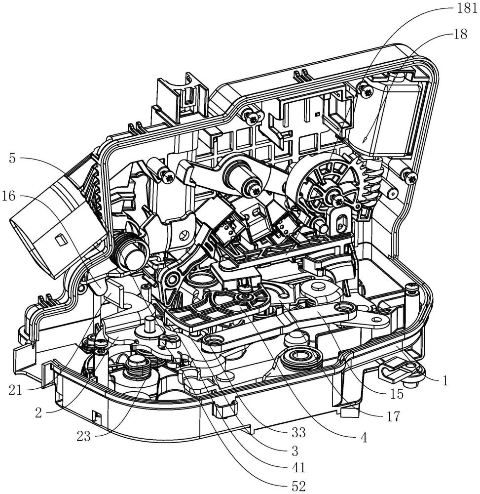

Como uma inovação-chave na segurança física moderna, as fechaduras inteligentes invisíveis com controlo remoto dividem‑se em duas arquiteturas: sistema único e sistema duplo. As diferenças entre ambas são significativas em fiabilidade, segurança e vida útil, afetando diretamente a experiência e a segurança do utilizador.

1. Fechadura inteligente invisível de sistema único – características técnicas
As fechaduras inteligentes invisíveis anti‑roubo de sistema único utilizam uma PCB e um motor. Este design de baixo custo é comum, mas apresenta limitações técnicas claras:
- Ponto único de falha: toda a fechadura depende de uma única PCB e de um único motor
- Risco de fiabilidade: se qualquer componente falhar, o utilizador não consegue abrir a porta
- Custo elevado de reparação: exige assistência profissional e a fechadura fica inutilizável durante o processo
- Grande presença no mercado: o baixo preço faz com que muitas marcas ofereçam apenas modelos de sistema único
2. Fechadura inteligente invisível de sistema duplo – vantagens técnicas
A WAFU tem-se dedicado ao desenvolvimento de fechaduras invisíveis anti‑roubo com sistema duplo, adotando PCB duplo e motor duplo:
- Redundância dupla: dois sistemas independentes funcionam em paralelo, cada um servindo de backup ao outro
- Comutação automática: quando o sistema principal falha, o sistema de reserva assume em menos de 0,3 s
- Objetivo real de zero falhas: o design de sistema duplo elimina bloqueios causados por falhas de componentes únicos
- Maior vida útil: a carga é distribuída, reduzindo o desgaste geral
3. Inovações centrais da tecnologia de sistema duplo WAFU
A WAFU alcançou vários avanços pioneiros no setor:
- Deteção inteligente de falhas: monitorização em tempo real dos dois sistemas com alertas antecipados
- Comutação contínua: a mudança entre sistemas é impercetível para o utilizador e não afeta o funcionamento
- Algoritmo de balanceamento de carga: distribuição inteligente do trabalho entre os sistemas evita envelhecimento prematuro
- Design modular: módulos defeituosos podem ser substituídos individualmente, reduzindo custos de manutenção
4. Múltiplos modos de entrada das fechaduras invisíveis inteligentes
As fechaduras invisíveis modernas oferecem vários métodos de abertura para diferentes cenários:
4.1 Desbloqueio por controlo remoto
- Tecnologia rolling‑code evita clonagem de sinal
- Alcance eficaz de 15–20 m para operação conveniente
- Emparelhamento com vários comandos para uso familiar
4.2 Desbloqueio via App móvel
- Ligação via Bluetooth ou Wi‑Fi
- Suporta autorizações remotas e PINs temporários
- Notificações em tempo real mantêm o utilizador informado
4.3 Desbloqueio por impressão digital
- Reconhecimento de dedo vivo por semicondutor
- <0,5 s de reconhecimento, FAR <0,001%
- Armazena várias impressões digitais para uso familiar
4.4 Desbloqueio por PIN
- Tecnologia de PIN virtual evita espreita por cima do ombro
- Códigos temporários de uso único para visitantes
- Bloqueio automático após tentativas incorretas
5. Valor prático da tecnologia de sistema duplo
As fechaduras invisíveis de sistema duplo da WAFU demonstram vantagens claras no uso diário:
- Proprietários: elimina o risco de ficar trancado devido a falha de um único componente
- Comércios: garante que entradas de escritórios, lojas ou armazéns permanecem funcionais
- Propriedades de arrendamento: reduz queixas de inquilinos e custos de manutenção
- Residências premium: oferece um nível de segurança compatível com imóveis de alto padrão
6. Tendências do setor & perspetivas tecnológicas
Com a evolução da segurança inteligente, as fechaduras invisíveis seguirão estas direções:
- Design redundante torna‑se padrão: arquiteturas de sistema duplo ou múltiplo serão características básicas de produtos premium
- Inteligência mais avançada: algoritmos de IA permitirão manutenção preditiva e deteção precoce de falhas
- Integração mais profunda: ligação estreita com ecossistemas smart‑home para automação por cenários
- Segurança reforçada: fusão mais estreita entre biometria e encriptação
"No setor das fechaduras inteligentes, a fiabilidade é um indicador mais importante do que as funcionalidades. A tecnologia de sistema duplo da WAFU resolve o problema da fiabilidade na raiz e oferece verdadeira segurança aos utilizadores." —— Diretor de I&D, WAFU Smart